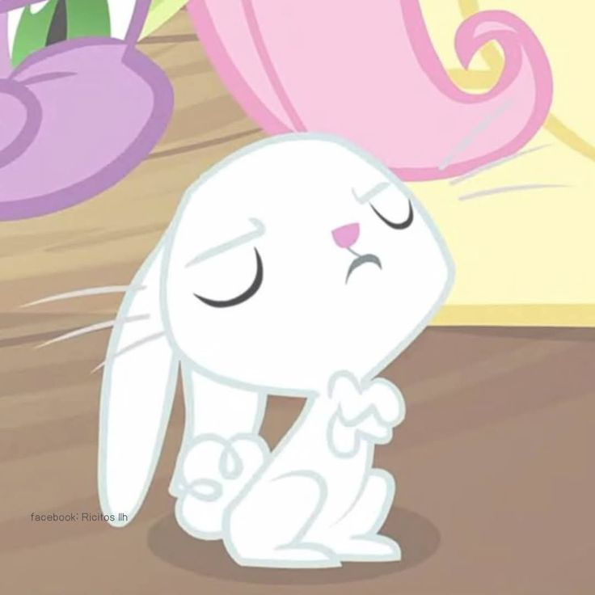

Icon personagem

Marca

coelho

Nome e especie
O seu nome é Fluttershy.
Na série, ela é uma pônei Pégaso. No universo de Equestria Girls, ela assume a forma humana.
Personalidade
Fluttershy é caracterizada por ser extremamente tímida, doce e de fala mansa. Ela possui uma natureza reservada, mas demonstra uma coragem surpreendente quando suas amigas ou animais estão em perigo. Embora evite conflitos, ela pode ter explosões de raiva ou tornar-se assertiva em situações extremas.
Elemento da amizade
bondade
Habilidades
Seus passatempos incluem cuidar de animais, cantar (ela possui um talento vocal excepcional, embora tenha medo de palcos), compor músicas e praticar costura.
Seu maior dom é a comunicação e empatia com animais. Ela também possui uma habilidade intimidante chamada "O Olhar", capaz de domar criaturas selvagens apenas com o contato visual. Em momentos de raiva extrema, ela pode se transformar na poderosa Saddle Rager.
Curiosidades
Seu animal de estimação é o coelho Angel, embora ela cuide de uma enorme variedade de criaturas em sua casa e em abrigos.
Apesar de ser um Pégaso, ela tem medo de altura e de voar em alta velocidade, preferindo ficar perto do chão.
Seus trabalhos ao longo da série são: zeladora de animais, é a pandeirista da banda As Rainbooms no mundo humano e serve como a Professora da Bondade na Escola da Amizade.
Melhores amigas
Rainbow Dash, Pinkie Pie, Rarity, Twilight Sparkle e Applejack.